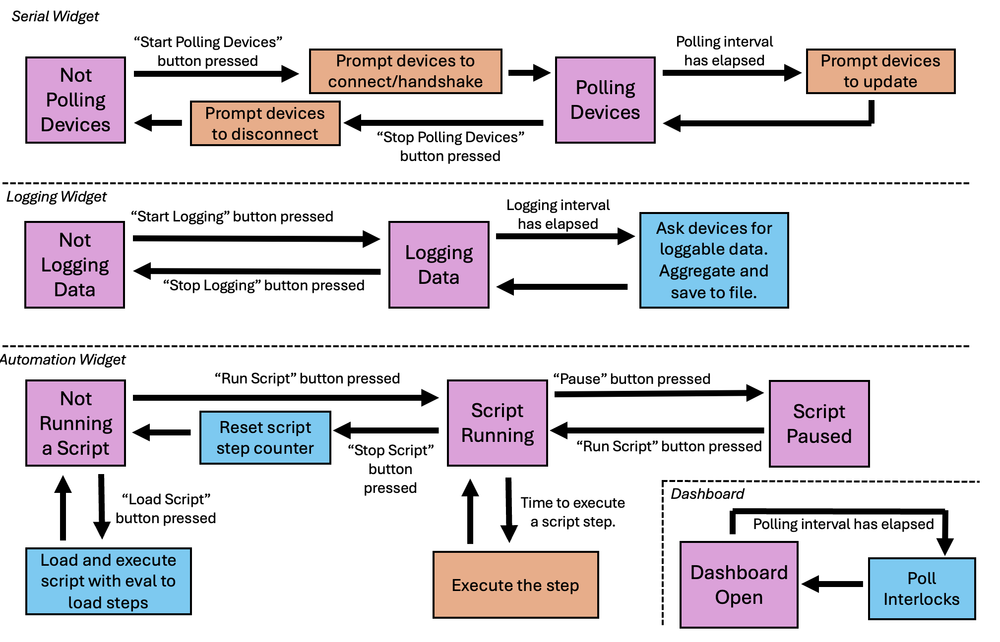
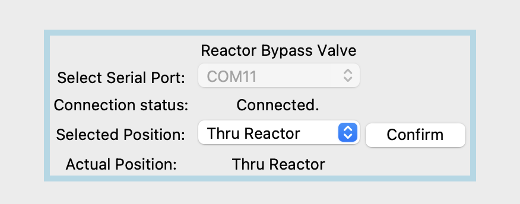

Tutorial: Writing Your Own Widgets
Writing your own widgets is the most complex thing you’re likely to do in PyOpticon. We’ve tried to make it relatively straightforward. It’s worth it, since once you’re not bound to the library of existing widgets, you’ll be free to build dashboards to control all kinds of existing and newly-acquired devices in your own lab or workspace.
PyOpticon’s Architecture
Before we go into how to create widgets, we wanted to give a quick overview of what’s actually going on inside a PyOpticon dashboard. The dashboard is an object containing various graphical and functional elements, including dictionaries of the constituent widgets that make it up. Running a dashboard entails launching a number of threads, each executing tasks in parallel. One ‘main’ thread runs the Dashboard object, operates the graphical user userface, and prompts other threads to do things. This all takes place in a single thread because Tkinter, the graphics package we use, is generally not thread-safe. All of the other threads each communicate with a single device. Since serial communications are very amenable to being split amongst multiple threads, giving each device its own thread works great; we just have to be a little careful about how those threads go about updating their associated graphical fields.
Here is a graphical finite-state-machine representation of what the main thread is doing:
This isn’t super important to study in detail. While it’s one thread, the serial widget, logging widget, automation widget, and interlock polling routine are all mostly doing their own things. Not pictured are a bunch of background processes within the Tkinter package that actually draw and operate the graphical interface (e.g., animating when you click a button, or showing dropdown when a menu is clicked on).
Each widget’s actions when prompted to connect, update, or disconnect are executed in the widget’s thread. These are discussed further below, and a graphical finite state machine for an individual widget is shown.
Extending the GenericWidget Class
Basics
The GenericWidget class is meant to allow widget development with less tedium and with less knowledge of tkinter,
Pyserial, and other specialized libraries. This is done by defining a superclass (GenericWidget) from which subclasses
(e.g., Valco2WayValveWidget) are defined. If you haven’t worked much with object-oriented programming before, it’s
probably worth reading a primer elsewhere (like this) on classes, objects, and inheritance. In short, the code that all
widgets share is written in a superclass, and when writing a subclass you need only write the code that is unique to the
widget that you’re trying to create.
We recommend using GenericWidget as the superclass for all widgets representing physical devices, and in fact for
all widgets except for purely cosmetic ones.
A later section talks about MinimalWidget, which lets you build widgets completely from scratch, which
we only recommend if you’re making a purely cosmetic widget like a TitleWidget, or if you need really special
behavior and you really know what you’re doing.
We’ll run through an example of building the Valco 2 Way Valve widget from the majumdar_lab_widgets package. This is a
convenient example because it’s only got one output field (the valve’s actual position) and one user input field (the desired
valve position). An important first step is to know this device’s serial communication protocol. We’ll assume we know the protocol
for the valve already, but if we didn’t, the next section includes tips on how to find it.
GenericWidget Input/Output Fields
The properties of GenericWidget subclasses are mostly stored as what PyOpticon refers to as ‘fields’. A field is a
text variable with a text identifier, a corresponding graphical element, and a label. For example, in the
Valco2WayValveWidget class, there’s a field for ‘Position Selection’ corresponding to a dropdown menu
and there’s a field for ‘Actual Position’ corresponding to a text readout. Fields are created using the add_field
method, read using the get_field method, and set using the set_field method, all of which are described in the
documentation. The point of using PyOpticon fields rather than instance variables is to let you avoid messing with
tkinter GUI elements and StringVar objects,
provide a clean way for automation scripts to control widgets, and let you avoid manually defining a log_data
function for most widgets.
GenericWidget Methods to Implement
Here is a graphical respresentation of what a GenericWidget does:

The overall state logic and the tasks in the light blue blocks are implemented for you in the GenericWidget superclass. The orange blocks represent methods that you can (and in some cases must) implement whenever you make a new widget, discussed in more detail here:
__init__: Required. The constructor method. Defines the widget’s fields and visual layout.on_handshake: Strongly recommended. Called when the dashboard begins polling devices. This method should initialize any non-serial.Serialobjects needed for communication, check that communication is proceeding as expected, and populate the widget’s fields with any initial values that are desired. If an exception is raised, the handshake is understood to have failed, and the device will not be polled.on_update: Required. Called whenever it’s time to update the widget. Usually this method will query the physical device for the latest readings, wait to receive them, parse them, and then update the widget’s output fields accordingly.on_serial_close: Strongly recommended. Called when the dashboard stops polling devices. The dashboard will automatically close anyserial.Serialobjects that it opened, but this method can close down other device-communication objects and return output fields to some placeholder value.on_failed_serial_open: Optional. If the widget is initialized withuse_serial==Trueand constructing theserial.Serialobject fails (e.g. because the COM port doesn’t exist), this method is called. It can do things like set fields’ values to “No Reading”.on_confirm: Optional. If the widget has input fields, a confirm button will be autogenerated, and this method will be called when it is clicked. Usually, its job is to parse the input fields’ values and translate them into commands to be sent to the device via a serial connection.
Below, we’ve included the whole Valco2WayValveWidget implementation; reading that is probably the easiest way to
understand what all these methods do. But first, here are a couple of important points:
If a widget is initialized with
use_serial=True, the dashboard will open aserial.Serialobject for you that gets stored in the widget’sself.serial_objectproperty. It will also worry about closing that object for you when communication ends. For widgets that update themselves in some other way, e.g. using an OEM Python driver, you’ll need to take care of these things yourself.The default behavior is to use
on_updateas theon_handshakemethod, with the handshake considered to have failed ifon_updateraises an exception. Basically, by default you can use a normal update cycle as a handshake, but you have the option of having a ‘special’ handshake that happens the first time only. You might want to overrideon_handshakeif you want to initialize a special object to handle serial communications with the device, query the device for values that only need to be checked once (e.g. a device ID), or set input fields’ default values to match the device’s state at the moment you connect.It’s best to initialize most widget properties and graphical elements as PyOpticon fields. Any PyOpticon fields can be read using
get_field, set usingset_field, controlled in automation scripts usingschedule_action, and will be logged by default. If you just want to store internal values that aren’t logged or shown in the GUI, instance variables (e.g.self.some_value=19) work just fine.The default behavior of
log_dataas defined inGenericWidgetis usually fine, but you can override it if you need to process the data before logging it or log data that aren’t PyOpticon fields. It just needs to return adictof the names and values of the data to be logged at a given time step.Some physical devices are finnicky about receiving too many serial queries in a row, and want a delay between consecutive commands. Just put a
time.sleep(0.05)or similar in between successive queries, messing with the time as needed. Blocking code like this is OK because each device has its own thread.
With all that in mind, here’s the implementation of Valco2WayValve, with some of the comments adjusted from the source code
for clarity and brevity. We just construct a widget, add an input and output field, and define how to send and parse serial
communications with the valve.
import numpy as np
import time
from .. import generic_widget
class Valco2WayValveWidget(generic_widget.GenericWidget):
# Docstrings have been omitted to save space
def __init__(self,parent_dashboard,name,nickname,default_serial_port,valve_positions,valve_id='1'):
# Initialize the superclass with most of the widget functionality
super().__init__(parent_dashboard,name,nickname,'#ADD8E6',default_serial_port=default_serial_port,baudrate=9600)
# Record the valve id
self.valve_id=valve_id.encode('ascii')
# Add a dropdown field
self.valve_positions=valve_positions
self.add_field(field_type='dropdown', name='Position Selection',label='Selected Position: ',
default_value=self.valve_positions[0], log=True, options=self.valve_positions)
# Add a readout field
self.add_field(field_type='text output', name='Actual Position',
label='Actual Position: ', default_value='No Reading', log=True)
# Move the confirm button
self.move_confirm_button(row=3,column=2)
def on_failed_serial_open(self,success):
self.set_field('Actual Position','No Reading',hush_warning=True)
def on_update(self):
# Send the query
if not self.parent_dashboard.offline_mode:
self.get_serial_object().reset_input_buffer()
to_write=self.valve_id+b'CP\r'
self.get_serial_object().write(to_write)
# Wait a bit
time.sleep(0.2)
# Read and parse the response
if not self.parent_dashboard.offline_mode:
status = str(self.serial_object.readline())
else:
v = np.random.randint(0,20)
v = 'A' if v>10 else 'B'
v = 'dd"'+str(v)+'dd\r\n'
status = str(v.encode('ascii'))
try:
i = status.index("\"")+1
is_A = status[i]=='A'
if is_A:
self.set_field('Actual Position',self.valve_positions[0])
else:
self.set_field('Actual Position',self.valve_positions[1])
except Exception as e:
fail_message=("Unexpected response received from 2-way valve: "+str(status))
self.set_field('Actual Position','Read Error')
return fail_message
return True
def on_serial_close(self):
"""When serial is closed, set all readouts to 'None'."""
self.set_field('Actual Position','No Reading',hush_warning=True)
def on_confirm(self):
"""When 'confirm' is pressed, send the appropriate commands to the valve.
"""
selected = self.get_field('Position Selection')
if not (selected in self.valve_positions):
print("\"Confirm\" pressed with no/invalid option selected.")
return
choice = self.valve_positions.index(selected)
if choice==0:
print("Moving valve \""+self.name+"\" to \""+selected+"\" (A)")
self.serial_object.write(self.valve_id+b'GOA\r')
else:
print("Moving valve \""+self.name+"\" to \""+selected+"\" (B)")
self.serial_object.write(self.valve_id+b'GOB\r')
Here’s what the widget ends up looking like:
Connecting to Instruments with Text-Based Serial Protocols
Many instruments communicate with computers by receiving and sending binary-encoded text messages. By default, PyOpticon widgets use this type of communication, enabled by the pySerial Python package.
In principle, a PyOpticon widget with pySerial can control any instrument that uses a text-based serial protocol. In practice, finding that protocol can be tricky. The protocol consists of a baud rate (an integer value, like 19200), a syntax for sending commands, and a syntax in which replies are sent.
It’s easiest if you can find a manual for your device that contains its serial protocol. If that fails, often the manufacturer will have documentation on the serial protocol that they can send upon request. It may be referred to as an RS232, DB9, or serial protocol.
If you have a manufacturer-supplied program that can talk to the device, you can also try to listen in on its connection and reverse-engineer the serial protocol. Some programs that may help do this are portmon, com0com, and realterm. This works best for simple devices that send the same commands over and over. Trying to reverse-engineer the protocol for a complex instrument in this way would be quite hard.
To connect to an instrument, find the appropriate set of cables and converters. USB-to-RS232 converters are available on Amazon and tend to work pretty well. We’ve had some issues using USB-to-many-RS232 multiplexers – it seems a bit more reliable to use a USB multiplexer coupled to many USB-to-RS232 cables. You can use the serial port scanner to verify that a new serial port appeared when the instrument was plugged in. Sometimes, you need to change settings on the instrument to enable serial communications; if so, the manual may explain how to do so.
Before trying to code a PyOpticon widget, we recommend sending the relevant commands manually to make sure the protocol works as expected. One easy way to do this is to use the pySerial library in the Python shell, accessed via IDLE. The pySerial website has some useful examples_.
On occasion, an instrument will require serial parameters like parity and stop bits that are different from the pySerial default.
As a workaround, in on_handshake, close the self.serial_object object that the widget auto-creates and replace it
with a new serial.Serial instance with the correct parameters and the same serial port.
Connecting to Instruments with Other Python Serial Packages and OEM Drivers
There are various other serial communication standards besides RS232 with ASCII-encoded text. One example is the RS485 standard with the Modbus communication protocol, a system commonly used for industrial controls. Another is the VISA standard, which helps manufactuers create cross-platform drivers for there instruments. There are existing Python libraries to facilitate communications using many of these standards, such as minimalmodbus and pyvisa. Additionally, many instrument manufacturers provide Python drivers to interface with their instruments.
The workflow to use one of these protocols is similar to that for ‘plain’ RS232 serial. First, write a standalone (non-PyOpticon)
Python script that can read from and write to your instrument, ensuring that you understand how Python communicates with your
instrument. Second, in on_handshake, initialize whatever object represents your serial connection (e.g. a pymodbus.ModbusSerialClient object).
Then, implement the other methods as normal, making sure to close the object however is needed in on_serial_close. The built-in
Thorlabs Optical Power Meter widget is a good example of a widget that uses an OEM Python driver.
Important Notes on Multithreading
PyOpticon uses multithreading to allow the use of blocking code in widget methods, which creates a good deal of flexibility in what types of widgets you can make. Blocking code is code that stops a program thread from doing anything else until it executes. With non-blocking text-based pySerial communications, you can instantaneously write to the device, do other things elsewhere in the program, then check back later to see if there was a response. PyOpticon uses this to query many devices in parallel. However, a pymodbus query will block all other tasks for ~0.1s while it waits for an instrument to respond. The same is true of using most OEM drivers to query an instrument. Because each device has its own thread (and usually each widget, unless explicitly told to share a thread), blocking code in handshakes, updates, and confirms will generally not gum up the program. While one thread waits for a certain device to respond, other parts of the program can go about their tasks.
However, as a result of this architecture, there are two things that you need to be aware of:
A widget’s
on_handshake,on_update, andon_confirmneed to interact with the widget, the Dashboard object, and graphical interface objects in thread-safe ways. Each of those methods executes in a widget’s thread, while the Dashboard and graphical interface live in a different thread, and blindly manipulating variables in one thread from another thread is a recipe for disaster.set_fieldandget_fieldare written to be thread-safe, so you can use them without worrying. To give you more flexibility, we also providedo_threadsafe, which can be used like so:self.do_threadsafe(lambda: self.disable_field("Setpoint")).To shut down widgets promptly,
on_serial_closeexecutes immediately in the main dashboard thread, unlikeon_updateetc. that execute in the widgets’ respective threads. One can have a situation where anon_updatemethod queries a device then waits for a response, but while it’s waiting,on_serial_closeis called serial connection closes, and it then attempts to read from a serial object that is closed. Therefore, before reading or writing to serial,on_updateandon_confirmshould double-check that the serial connection is still open by checking the widget’sself.parent_dashboard.serial_connectedflag. Callingset_fieldwhile serial is closed prints a warning to help you remember to do this, though it can be suppressed by givingset_fieldthe argumenthush_warning=True.
Be careful if you choose to take advantage of packages that offer asynchronous access to serial devices, e.g. OEM drivers that make use of asyncio. In many cases it’s simplest to force the thread to wait until an asynchronous method finishes before moving to the next task, essentially turning it into blocking code. Since each widget gets its own thread, and you likely only need to do a handful of calls every update cycle, doing so is unlikely to gum up the entire dashboard.
GenericWidget Tricks and Features
In developing widgets for our own lab, there were a few things for which we added special options in the GenericWidget
class. They’re buried in the documentation, so we will quickly highlight some here:
Offline-mode testing: Sometimes it’s nice to do a lot of the cosmetic setup of a widget on a laptop or at home, with dummy values replacing values read from a physical device, then come into lab just to do the final integration with the hardware. A dashboard can be initialized with
offline_mode=Trueto indicate this, which sets a dashboard’soffline_modeflag for widgets to check. Then, in anon_updatemethod, you can say something likestatus = self.serial_object.readline() if not self.parent_dashboard.offline_mode else b'123C\n', and proceed with parsing as though b’123\n’ were an actual response from a real device.Disabling fields: If you want to grey out an input field, perhaps so you can’t change it while the serial connection is active, the
disable_fieldandenable_fieldmethods will let you do that.Moving confirm button: If the ‘Confirm’ button is autogenerated in an inconvenient place, you can move it using the
move_confirm_buttonmethod.Overriding colors: The
override_colormethod lets you change the color of a widget’s frame from the default for that type of widget.Updating a widget less often: The optional
update_every_n_cyclesargument to theGenericWidgetconstructor creates a widget that updates every 2nd, 3rd, or nth cycle instead of every cycle. This is useful for instruments that take a while to respond to serial queries. TheSpicinessWidgetclass is initalized withupdate_every_n_cycles=3to demonstrate this option.Widgets sharing a thread: sometimes it may be necessary for multiple widgets to share one serial connection. This happened for us when we have several mass flow controllers that are all controlled by one control box with a single serial connection. You can initialize a GenericWidget with the parameter
widget_to_share_thread_withand it will create a single thread for multiple widgets. The thread maintains a queue of tasks, so you can be sure that the widgets’on_handshake,on_update, andon_serial_closemethods will always be called in the same order (the order in which the widgets were added to the dashboard).
Extending the MinimalWidget Class
For all widgets representing physical devices, we suggest extending the GenericWidget class, which saves a lot of work
compared to building one from scratch. Even for widgets that don’t represent a physical device, e.g. some kind of
calculator widget to help the operator, it may be easiest to just use a GenericWidget subclass with the
use_serial=False option, which can save some messing with tkinter GUI elements. However, we include the MinimalWidget
class in case you really do want to build a widget from scratch.
The MinimalWidget class implements only the few methods that are required for a widget to interface with its parent
dashboard (on_handshake, on_update, on_confirm, and on_serial_close).
All of them default to doing nothing, though of course you can override them.
The most likely use of the MinimalWidget is writing a widget that is purely cosmetic. Such a widget needs none of the
serial or logging machinery of a GenericWidget subclass, nor would it want to be stuck with a GenericWidget subclass’
colored frame and gridded layout. A MinimalWidget class just contains a tkinter frame object on which anything can be drawn,
e.g. text, images, etc. The only widget we’ve written that extends MinimalWidget is the TitleWidget, whose entire
implementation is included below:
from tkinter import *
import tkinter.font as tkFont
from .. import minimal_widget
class TitleWidget(minimal_widget.MinimalWidget):
""" A simple widget containing only text, intended for making a big-text title for a dashboard.
Uses the MinimalWidget superclass, since all of the GenericWidget machinery is unnecessary.\n
:param parent_dashboard: The dashboard object to which this device will be added
:type parent_dashboard: pyopticon.dashboard.PyOpticonDashboard
:param title: The text to be displayed within this widget, called 'title' because it's likely to be the title of the entire dashboard.
:type title: str
:param font_size: The size of font to be used in the text, as an integer.
:type font_size: int
"""
def __init__(self,parent_dashboard,title,font_size):
""" Constructor for a title widget."""
super().__init__(parent_dashboard)
fontStyle = tkFont.Font(size=font_size)
# This entire widget is just one big Label
Label(self.frame, font = fontStyle, text = title).pack()